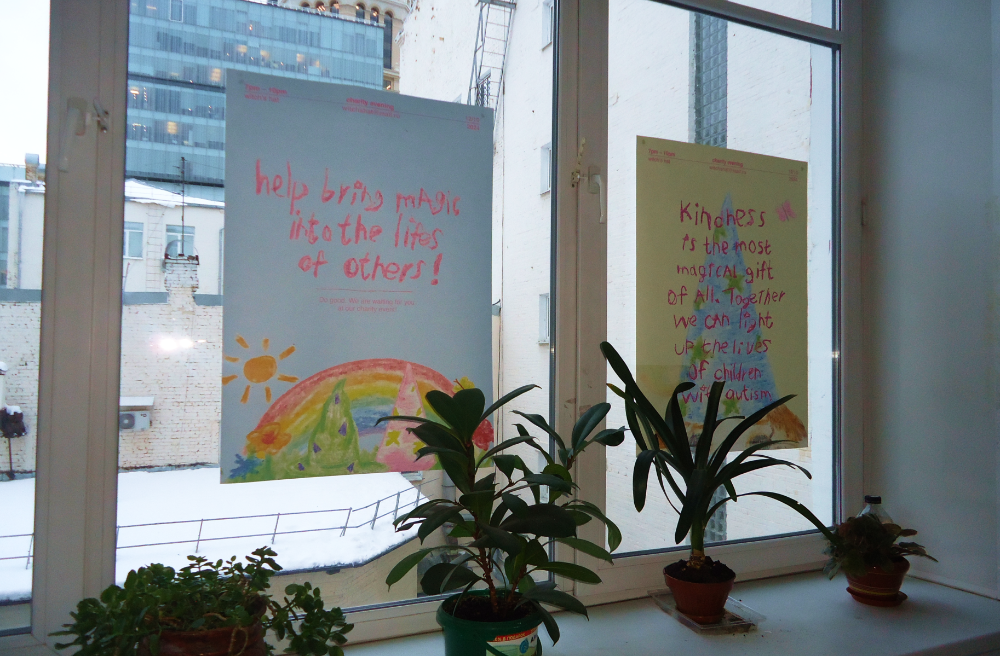
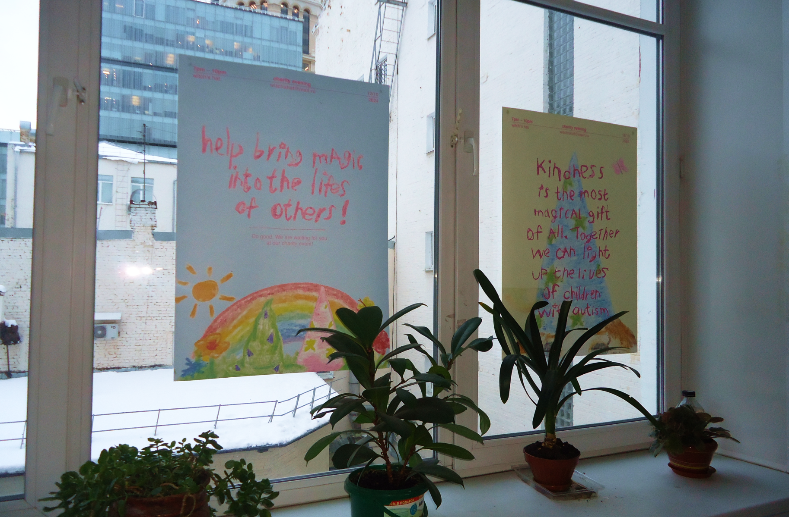
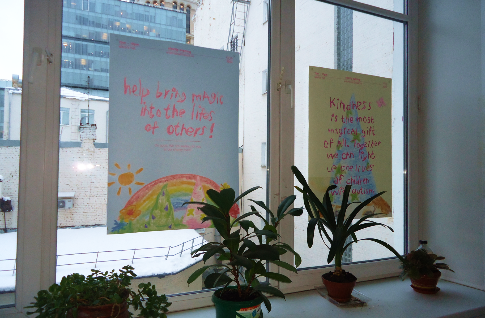

←
WITCH'S HAT &

 


WITCH'S HAT &
YOUNG KINK
Там, где серебро встречается с магией, а ностальгия обретает панковский оттенок — сотрудничество YOUNG KINK X WITCH’S HAT — это игривая бунтарская история, завернутая в шарм.
Эта коллекция передает энергию детского волшебства с взрослым оттенком: представьте браслеты, наполненные тайнами, кольца, которые служат амулетами, и подвески — как маленькие акты неповиновения.
Это дань уважения аутсайдерам, мечтателям, тем, кто никогда не отпускает свою внутреннюю странность. В равной мере нежные и неукротимые, эти украшения приглашают вас принять свою магию — не аккуратную и отполированную, а хаотичную, выразительную и совершенно вашу.
Ведь это не просто украшения. Это заклинания для тех, кто не боится быть необычным.

Нас вдохновила серия благотворительных плакатов, созданных в поддержку детей с расстройствами аутистического спектра. Эти работы наполнены искренностью, светом и особой нежностью детской души, показывающей мир через призму невинности и чистоты, которые нужны всем нам. Это чувство — мягкое, но сильное — стало отправной точкой для нашего совместного проекта.
Коллекция YOUNG KINK X WITCH’S HAT родилась на пересечении магии, звездного неба и детской невинности. Мы хотели запечатлеть ощущение удивления и волшебства, которое живет в каждом из нас, сохранив ту же наивность, но через призму бунтарства и смелости. Каждое украшение — это не просто аксессуар, а крик души, заявление о свободе и индивидуальности.
МЫ ЖДЕМ ВАС В НАШЕМ МАГАЗИНЕ!